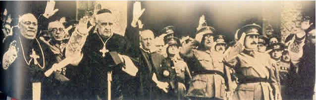

Rozdział 17 (cz.3)
Część 3 Rozdziału 17.
Ponownie katolicyzm został uznany, jako panująca religia włoskiego Królestwa i niebawem podpisano konkordat z Niemcami, zawarty 20 lipca 1933 roku z Hitlerem, który był podobny do konkordatu zawartego z Mussolinim.Już w 1935 roku biskupi skierowali list do Kanclerza Rzeszy Niemieckiej, w którym czytamy:
„Związki katolicko-narodowe pragną ofiarnie i wiernie służyć narodowi niemieckiemu i ojczyźnie, zgodnie z duchem narodowo-socjalistycznym”.
Po podpisaniu konkordatu, tak ważnego dla Hitlera, von Pappen, ściśle współpracujący z papieżem i Hitlerem (od czerwca do grudnia 1932 kanclerz Rzeszy), powiedział:
„Trzecia Rzesza jest pierwszym mocarstwem nie tylko uznającym, lecz w dalszym ciągu wprowadzającym w życie szczytne zasady papiestwa”.
Religia katolicka znowu powróciła na ołtarze, jako jedyna słuszna. Na początku roku 1933, kierownictwo Akcji Katolickiej w Niemczech, pozostające wówczas pod przewodem von Pappena, wydało następujące oficjalne oświadczenie:
„My, katolicy niemieccy, całą duszą i z pełnym przekonaniem będziemy popierać Adolfa Hitlera i jego Rząd. Jesteśmy pełni podziwu dla jego umiłowania ojczyzny oraz energii i mądrości, jako męża stanu. (…) Katolicyzm niemiecki (…) musi czynnie uczestniczyć w budowaniu Trzeciej Rzeszy”.
Biskup Bornewasser z Trewiru, po dojściu Hitlera do władzy, patetycznym tonem, oznajmia:
„Z podniesioną głową i energicznym krokiem wkroczyliśmy do nowej Rzeszy i jesteśmy gotowi służyć jej ze wszystkich sił, ciałem i duszą”. („Ecclesiastica”, rocz.13, str.477).
Biskup Sufragan Burger, nie waha się stwierdzić:
„Cele rządu Rzeszy są od dawna celami naszego Kościoła katolickiego” (Burger, „Unser Wille zur Tat, Zeit ud Volk”, I,str.181).
Kardynał Faulhaber z Monachium, który już podczas pierwszej wojny światowej, służył, jako biskup polowy, stał się szczególnie gorliwym zwolennikiem Hitlera, do którego wysłał odręcznie napisany list, zawierający między innymi takie słowa:
„Mówimy szczerze, z głębi duszy: oby Bóg zachował naszemu narodowi jego kanclerza”. (A.Kupper, art. „Zur Geschichte des Reichkonkordats” w „Stimmen der Zeit”, t.163).
Po inwazji Hitlera na Rosję, Pius XII z radością mówił, w swym radiowym orędziu, o „dających sercu nadzieję na rzeczy wielkie, święte”, i dostrzegał „wspaniałą ofiarność walczących w obronie zrębów chrześcijańskiej kultury”, wyrażając ufność w „ich triumf”.
Wypowiadający powyższe słowa „namiestnik Chrystusa” nie miał zapewne na myśli żołnierzy Armii Czerwonej, gdyż w Watykanie od dwudziestu lat pokonanie komunizmu i Związku Radzieckiego było bardziej upragnione niż cokolwiek innego.
Szef wywiadu - Schellenberg, Obergruppenführer SS, podsumował swoją pięciostronicową relację z rozmowy z papieżem:
„Papież uczyni wszystko, co w jego mocy, żeby zapewnić zwycięstwo Niemiec. Jego celem jest zniszczenie Rosji”.
Demon podszywający się pod postać śpiącej Marii powiedział w Fatimie w 1917 roku:
„Rosja niedługo zjednoczy się pod patronem mojego niepokalanego serca”.
To stanowiło silny impuls dla przywódców katolickich, którzy w to uwierzyli i gorliwie wspierali poczynanie faszystowskich Włoch oraz Niemiec odnośnie ataku na Rosję – „królów ze wschodu słońca” (Objawienie 16:12).
Kiedy w październiku 1941 roku wojska hitlerowskie podeszły pod Moskwę, Pius XII, wezwał katolików do modlitwy o szybką realizację obietnicy „Matki Bożej” z Fatimy.
Co ciekawe Pius XII wiedział już w połowie sierpnia 1939 roku, od swego nuncjusza w Berlinie Orsenigo, o planowanej inwazji na Polskę, ale nikogo nie ostrzegł - ujawnił to długoletni watykański korespondent agencji Associated Press, Morgan Scheinman, który jak pisał w połowie sierpnia Hitler poprosił papieża, by ten nie potępił inwazji i by pozyskał polskich katolików dla krucjaty przeciw Związkowi Radzieckiemu (Manhattan, str.192 i następne).
Poparcie Piusa XII dla hitlerowskiej napaści na Polskę znalazło swój wyraz w encyklice z 20 października 1939 roku, kiedy papież uznał ją za „walkę interesów o sprawiedliwy podział bogactw, którymi Bóg obdarzył ludzkość”.
Komentarz chyba zbędny…
Po upadku Polski, która doświadczyła okupacji niemieckiej i rosyjskiej, zbiegły za granicę długoletni polski minister spraw zagranicznych, Józef Beck, oświadczył:
„Do głównych sprawców tragedii mego kraju należy też Watykan. Zbyt późno pojąłem, że nasza polityka zagraniczna służyła interesom Kościola katolickiego” (Cyt. w: Manhattan, str.277).
Adolf Hitler miał katolickich rodziców, był ochrzczony, jako katolik i tak też został wychowany i wykształcony. Nigdy go także nie ekskomunikowano, co nie omieszkano czynić innym, za drobne odstępstwa dogmatyczne (czyli herezje).
„Mein Kampf” kościół nigdy nie wpisał do Index Ksiąg Zakazanych…
W roku 1938 sławnego pisarza Hemingwaya zbulwersowały dwie fotografie, jedna przedstawiając martwe dzieci po zamach bombowych zleconym przez generała Franco w czasie wojny domowej w Hiszpanii (1936-1939), kiedy padł rozkaz mordowania ludności cywilnej, a druga fotografia, zamieszczona w „New York Herald Tribune” (patrz zdjęcie poniżej), gdzie podano, że kardynał Patrick Hayes modlił się o zwycięstwo generała Franco.

Hemingway napisał:
„Rozpoznaję generała Arandę i generała Davilę (…) i rozpoznaję oddawane przez nich honory wojskowe. Jest to stary salut regularnej armii hiszpańskiej. Nie wiem natomiast, w jakim to geście pozdrowienia wznoszą ręce biskup Lugo, arcybiskup oraz kanonik Santiago, a także biskup Madrytu. Czyżby to był salut faszystowski? Czy to pozdrowienie nazistów i włoskich faszystów?”
Hemingway się dziwił klerowi?
Przecież przykład szedł z samej góry.
Generał Francisco Behamonde Franco – gorliwy katolicki ludobójca, nazwany został przez Piusa XII „ulubionym synem papieskiego tronu”.
Pacelli, zaraz, po wybraniu go na papieża, w 1939 roku podziękował generałowi Franco za odniesienie „tak pożądanego przez Kościół katolicki zwycięstwa”.
I ani słowa o 600 tysiącach ofiar wojny!
Oto fragment listu papieża Piusa XII z 1 kwietnia 1939 roku do generała Franco:
„Radujemy się wraz z Waszą Ekscelencją z uprawnionego zwycięstwa Hiszpanii Katolickiej”.
A oto pobożni zakonnicy, czyli katolicka ewangelizacja Hiszpanii (1938 rok):
Następny telegram z gratulacjami wysłano do Führera niemieckich nazistów, któremu Pacelli przekazał „najlepsze życzenia opieki niebios i błogosławieństw wszechmocnego Boga”.
Od samego początku swego pontyfikatu, Pacelli (Pius XII) podkreślał, iż Führer jest prawowitym przywódcą Niemców, a kto odmówi mu posłuszeństwa, ten zgrzeszy.
„Nierządnica” watykańska, oczywiście upatrywała swoją szansę w kolejnej głowie smoka, tak mówił papież już w 1903 roku:
„Niemcy muszą stać się mieczem Kościoła katolickiego!”
„To było interesujące, że Papież powiedział do mnie przy tej okazji, że Niemcy muszą stać się mieczem Kościoła katolickiego. Powiedziałem, że stare Cesarstwo Rzymskie narodu niemieckiego już nie istnieje i że warunki się zmieniły. Ale on obstawał przy swoim” (Kaiser wspomnienia. Strona 211, opublikowany przez Harper & Brothers w Nowym Jorku i Londynie, 1922).

Na powyższym zdjęciu po prawej, arcybiskup Cesare Orsenigo, nuncjusz papieski na Niemcy, rozmawia z Hitlerem na oficjalnym przyjęciu w Berlinie, w styczniu 1936 roku.
Po lewej papież z wizytą w Berlinie.
Dnia 12 marca 1938 roku Hitler, nie napotykając oporu, wkroczył do Austrii i wkrótce przyłączył ją do Niemiec. W niespełna tydzień później wszystkich sześciu biskupów austriackich, w tym kardynał Theodor Innitzer, podpisało płomienną „uroczystą deklarację”, w której w związku z nadchodzącymi wyborami, oświadczyli:
„Jako biskupi uważamy za swą oczywistą powinność obywatelską, by jako Niemcy opowiedzieć się za Rzeszą Niemiecką”.
Prasa austriacka opublikowała ową „uroczystą deklarację” (Feierliche Erklärung) dnia 28 marca 1938 roku. Gazetowy nagłówek tej deklaracji brzmiał:
„Bekenntnis der katholischen Kirche zu Grossdeutschland. Episkopat für Nationalsozialismus” - "Opowiedzenie się Kościoła katolickiego za Wielkimi Niemcami. Episkopat popiera narodowy socjalizm".
W trakcie wielkiego przyjęcia w Wiedniu, kardynał Innitzer należał do pierwszych, którzy przywitali Hitlera pozdrowieniem nazistowskim. Nakazał także zawiesić we wszystkich kościołach austriackich flagi ze swastyką, bić w dzwony i modlić się za nazistowskiego dyktatora.
Poniżej zdjęcie „Uroczystej deklaracji”, w której sześciu biskupów oświadcza, że ich obywatelskim obowiązkiem jest głosować na Rzesze Niemiecką! Widać także kardynała Innitzera, który wchodzi do lokalu wyborczego, z pozdrowieniem „Heil Hitler” i oddaje głos na rzeszę Niemiecką 10 kwietnia 1938 roku. (Scheinmann, str.48).
W 1939 roku, w dzienniku urzędowym diecezji bamberskiej, znalazł się takie oto kazanie, z okazji urodzin Führera:
„W przyszły czwartek, 20 kwietnia, Naród Niemiecki obchodzi 50-te urodziny naszego Führera i kanclerza Rzeszy, Adolfa Hitlera. Dla uczczenia tego święta, w przeddzień 20 kwietnia, decyzją naszych Najdostojniejszych Biskupów, po wieczornym dzwonieniu modlitewnym, nastąpi uroczyste bicie w dzwony. Już dziś chcemy w tym świętym miejscu dać wyraz naszym najlepszym życzeniom, wspólnie i w skupieniu odmawiając teraz «Ojcze nasz» za Führera i Ojczyznę. «Ojcze nasz….» (należy to odczytywać po kazaniach w Białą Niedzielę)” („Kirchliches Amstblatt für die Diözese Münster”, rocz.73, nr 25).
Poparcie dla Hitlera ze strony niemieckich biskupów katolickich nie ustało bynajmniej w chwili wybuchu wojny, lecz było odtąd wyrażane jeszcze gorliwiej. W wielu wypowiedziach zwracali się oni do narodu niemieckiego, by okazywał Hitlerowi posłuszeństwo i z determinacją mu służył.
„Biskupi niemieccy uważają za swój obowiązek popieranie przywódcy Rzeszy Niemieckiej wszystkimi środkami, jakie Kościół ma do dyspozycji. […] Musimy zmobilizować wszystkie siły duchowe i moralne Kościoła, aby umocnić ufność w Führera.” (List pasterski biskupów niemieckich z dnia 3 stycznia 1937r. Cytowane za Guenter Lewy, The Catholic Church and the Nazi Germany (McGrow - Hill, 1964), str. 106-109.).
Wiadomo także, że Pius XII osobiście przyjmował u siebie SS-manów i święcił ich zbrodnicze chorągwie.
„Biskupi, następcy apostołów i reprezentanci Stolicy Apostolskiej, potwierdzają swą współpracę z nową Rzeszą, złożeniem na ręce przedstawicieli najwyższych władz państwa, uroczystej przysięgi, świadczącej o determinacji” (Franz von Papen, str.5).
Nazistowskie sztandary w niemieckich kościołach były powszechnym widokiem. Krzyż i swastyka mówiły wówczas jednym głosem.
Po dokonanym w Monachium, jesienią 1939 roku zamachu na Hitlera, Pius XII osobiście pogratulował mu, poprzez swego nuncjusza, uratowania się od tego wielkiego niebezpieczeństwa. W imieniu biskupów Bawarii, pogratulował też Hitlerowi kardynał Faulhaber:
„My wszyscy dziękujemy Panu Bogu za Jego łaskawość” - pisał organ ratyzbońskiej kurii biskupiej po „zbrodniczym zamachu na życie Führera i kanclerza Rzeszy”.
„My wszyscy modlimy się, z głębi naszych serc: Panie, miej zawsze pod Twoją cudowną opieką Führera i cały nasz naród niemiecki!”.
20 lipca 1944 roku, monachijski kardynał, Faulhaber, potępił kolejny zamach na Hitlera, nazywając go „szaleństwem, które rzuciło nasz naród w najokropniejszy chaos i w najbardziej skuteczny sposób dopomogło bolszewizmowi do zwycięstwa”.
Kiedy Anglia i Francja wezwały papieża, by potępił Niemcy, jako agresora i sprawcę drugiej wojny światowej - papież odrzucił ich apel. Znał prawdę, ale milczał.
Zamiast tego - niejednokrotnie dawał wyraz „nie tylko najgorętszej sympatii dla Niemiec, ale i podziwowi dla wielkości Hitlera” i polecił aż dwóm nuncjuszom, by przekazali mu, że papież nie pragnie „niczego bardziej, niż zwycięstwa Führera”! („Opus diaboli”, Karlheinz Deschner).
W 1945 roku - Pius XII w orędziu wigilijnym staje w obronie głównych oskarżonych o zbrodnie przeciwko ludzkości.
Kuria rzymska interweniuje w sprawie ułaskawienia 200 zbrodniarzy hitlerowskich, w tym m.in. katów polskiego narodu, Franka i Greisera. To tylko niewielki epizod w szeroko zakrojonej akcji ratowania hitlerowców przed odpowiedzialnością karną.
Do dziś Watykan nie wytłumaczył się ze swojej haniebnej roli pomocy, jaką udzielił nazistowskim zbrodniarzom, pozwalając im zbiec w bezpieczne kraje Ameryki Południowej.
Polityka faszystowskich Niemiec nie była niczym nowym, wzorowała się, czerpiąc garściami z polityki i pomysłów papieży, na przykład stosunek do Żydów - w kwestii antycypacji pewnych rozwiązań wiemy już, że wątpliwy zaszczyt wynalezienia specjalnie oznakowanej odzieży należy do kościoła katolickiego. Przykład szedł oczywiście z samej góry - to papież Innocenty III wydał akt nakazujący Żydom noszenia znaków na ubraniu (początek XIII w.).
Także getta to wynalazek katolicki.
W kwietniu 1933, Hitler powiedział biskupowi Berningowi z Osnabbrück:
„Jeśli chodzi o Żydów, to realizuję tę samą politykę, jaką przyjął Kościół katolicki przed 1500 laty”.
Zobaczmy, co napisano choćby w „Historii powszechnej średniowiecza”, Benedykta Zientary:
„Fanatyzm religijny, podsycany ustawicznie w tym okresie (okres krucjat, wypraw krzyżowych), i ideologia zwalczania "niewiernych" mieczem rozszerzyły niebawem przedmiot nienawiści z muzułmanów i pogan na obce pod względem religijnym grupy w łonie miejscowych społeczeństw na heretyków i Żydów. Za papieża Innocentego III sobór laterański IV (1215) przypieczętował ten proces nakazując Żydom mieszkać w wyodrębnionych dzielnicach, określanych we Włoszech mianem getta (od włoskiego borghetto - miasteczko) oraz przymusem noszenia wyróżniającego stroju.”
Hasła „nie kupuj u Żyda”, gwiazdy Dawida naszyte na ubrania, izolacja aż do gettyzacji - wszystko to, co nam się kojarzy z czasami nazizmu, nie hitlerowcy wymyślili.
Mieli gotowe rozwiązania…
To „namiestnicy Chrystusa” ustanowili getta żydowskie. Na przykład w 1555 roku papież Paweł IV wydał bullę „Cum nimis absurdum”, na podstawie, której utworzono w Rzymie getto żydowskie:
„Wszyscy Żydzi winni mieszkać na jednej ulicy (...), ulica względnie kwartał żydowski mają być otoczone murem i winny mieć tylko jedno wejście (...)”. („Zuchwali Żydzi”, art. „Nasza wina”, St. Janecki i J. S. Mac „Wprost” nr 12 z 25 marca 2001, s. 29).
Synagoga mogła być jedna, inne należało wyburzyć, powtórzono też zapis o konieczności noszenie przez ludność żydowską oznakowań (żółte kapelusze, i takież welony dla kobiet) oraz zakaz leczenia „chrześcijan” przez lekarzy wyznania mojżeszowego. Następnie getta powstały we wszystkich miastach papieskich. („Holocaust. Zrozumieć dlaczego”).
Te regulacje przetrwały w Rzymie aż do XIX wieku. W podsycaniu tej histerii celowali zwłaszcza jezuici, którzy byli bardzo częstymi inspiratorami oskarżeń o mordy rytualne.
Bardzo też dbali o własną „czystość rasową” - otóż wstępujący do zakonu musiał udowodnić, że nie ma żydowskich korzeni nawet do piątego pokolenia.
„Odtąd, na tle psychozy religijnej bardzo ogólnej atmosfery strachu szerzącej się w obliczu niebezpieczeństw zewnętrznych (np. w chwili pojawienia się Mongołów) czy klęsk żywiołowych, lęk mas chrześcijańskich przed karą bożą, zwłaszcza w miastach, znajdował wyraz w prowokowanych często przez fanatycznych kaznodziejów napadach i mordowaniu Żydów, których sama obecność miała obrażać Boga. Pojawiły się też wzmacniające nienawiść ku Żydom oskarżenia ich o zatruwanie studzien, o mordy rytualne dzieci chrześcijańskich, o profanowanie hostii lub innych świętości chrześcijańskich. Oszczerstwa te częstokroć rozpuszczane były przez rządców dążących do zawładnięcia mieniem prześladowanych. Papiestwo popierało tendencje do odgradzania ich od społeczeństw chrześcijańskich, a wielu wybitnych działaczy kościoła brało udział w podniecaniu psychozy antyżydowskiej. W takiej sytuacji Żydzi coraz bardziej skupiali się wokół swej wiary i tradycji i jeszcze silniej separowali od społeczeństw chrześcijańskich. Zrazu dobrowolnie (Wiedeń, Spira, Kolonia, Wormacja, Nimes w XI w.), a potem przymusowo, gromadzeni byli wokół miast, określanych we Włoszech mianem getta (od wł. borghetto - miasteczko). Za Innocentego III sobór laterański IV (1215) przypieczętował ten proces, nakazując Żydom mieszkać w wyodrębnionych dzielnicach i nosić wyróżniający strój.” (HISTORIA POWSZECHNA ŚREDNIOWIECZA Benedykt Zientara).
Oto zaledwie fragment przykładowego czasopisma katolickiego „Przewodnik Katolicki. Ilustrowany tygodnik dla rodzin katolickich” red. nacz. Ks. Józef Kłos (numer 42 z roku 1931), w którym ksiądz podsyca nastroje antysemickie:
„Polska jest najwięcej zażydzonym krajem na świecie. Prawie cztery miliony żydów rozpiera się w naszej ojczyźnie, zajmując wybitne placówki gospodarcze i kulturalne. Żydzi opanowali u nas całkowicie przemysł i handel i są największymi kapitalistami, zaś rdzenni Polacy, którzy od wieków na swej ziemi mieszkają i krew w jej obronie przelewali, schodzą coraz więcej do rzędu sługusów i niewolników żydowskich. Żydzi odgrywają u nas haniebną rolę trucicieli ducha i wyzyskiwaczy.TRUCICIELE DUCHAKto zawsze zwalczał zaciekle chrześcijaństwo? Żyd. W swej nienawiści ukrzyżowali Chrystusa, tą nienawiścią pałają dziś do wyznawców Jego. Kto popiera sekciarzy i różnych wywrotowców? Żyd. Kto szerzy pornografię, plugawe piśmidła i książki? Żyd. Kto sieje u nas zarazę komunizmu? Żyd. Kto sprzedaje polskie dziewczęta do domów publicznych? Żyd.WYZYSKIWACZE LUDUŻydzi zagarnęli u nas przemysł, kupiectwo i dlatego są największymi bogaczami, zaś Polacy stają się powoli żebrakami na własnych śmieciach. Ale na szczęście Polacy uświadamiają sobie w ostatnich czasach tę grozę żydowskiego zalewu i zaczynają się bronić przed ich haniebnym pasożytnictwem. Zaczyna się u nas bojkot towarów żydowskich, chłop polski bierze się do handlu, a młodzież akademicka garnie się do katolicyzmu, bo zrozumiała, że hasła materialistyczne, jakimi ją karmiono dotychczas - to trucizna spreparowana przez żydów celem zgangrenowania ducha polskiego. Po całym kraju przechodzi prąd wyzwoleńczy spod upokarzającego jarzma żydowskiego. Tylko socjaliści pozostają nadal pachołkami żydowskimi. W Radomiu odbył się kongres PPS. W rezolucji uchwalonej na tym kongresie czytamy zdumiewające słowa, że <antysemityzm w Polsce jest wymysłem sfer kapitalistycznych>. Te słowa świadczą o zacofaniu socjalistów, którzy nie uznają u nas niewoli żydowskiej. Ale kongres poszedł dalej, bo czytamy tam, że klasa robotnicza ma obowiązek bezwzględnej walki z przejawami antysemityzmu. A więc robotnicy powinni walczyć. Z kim? Z Polakami, którzy bronią przed wpływem rozpanoszonego żydostwa!! (...)”. (Ksiądz Józef Hejnał „Smok Wadery” nr 33/34 kwiecień 1991).
Słynne Protokoły Mędrców Syjonu to tak naprawdę tylko zwieńczenie długiego procesu pomówień…
To wszystko składa się na KOŚCIÓŁ RZYMSKO KATOLICKI, którego „czarami dały się zwieść wszystkie narody. (24) W nim też znaleziono krew proroków i świętych, i wszystkich, którzy zostali pomordowani na ziemi.” (Objawienie 18:23-24).
Pius XII był osobiście odpowiedzialny za ludobójstwo, co najmniej pół miliona prawosławnych Serbów, Żydów i Romów w Chorwacji, Bośni i Krajinie przez zbrodniczy reżim ustaszy w latach 1941-45.
Ustasze byli wspierani i organizowani przez zakon franciszkanów – przy pełnej wiedzy Watykanu.
Wykonawcą rozkazów był kardynał Stepinac, który przejął władzę w Chorwacji i rozpoczął rzeź Serbów, którzy nie chcieli nawrócić się na katolicyzm.
Rzeź tak okrutną, że aż trudno uwierzyć...
Dyktaturę w Chorwacji, rządzonej przez ustaszów Ante Pavelicia, najlepiej określił sam chorwacki minister edukacji dr Mile Budak:
„Część Serbów wybijemy, część wygnamy, a resztę, która musi przyjąć religię katolicką, włączymy do narodu chorwackiego (...) Wszystkie nasze poczynania wynikają z wierności wobec religii i Kościoła Katolickiego”.
Morderca kardynał Stepinac, został w 1998 roku beatyfikowany i ogłoszony męczennikiem przez Jana Pawła II.
Papież złożył publicznie hołd samemu Paveliciowi w 1998 roku, modląc się przed jego mauzoleum, a obecnie Watykan chce beatyfikować Piusa XII, który współpracował z Hitlerem oraz popierał działania Stepinaca...
Nie oszukujmy się to jest wciąż to sama, zakłamana „nierządnica”, która prześladowała nie tylko prawdziwy lud Boży i będzie to czyniła zawsze, gdy nadarzy się dogodna okazja.
Ósmy król.
„A zwierzę, które było, a już go nie ma, jest ósmym, i jest z owych siedmiu, idzie na zatracenie” (17:11).
8. Unia Europejska (trwa i rośnie...)
Jedynym jeszcze większym Imperium od poprzednich, które cały czas rośnie jest Unia Europejska...
Ósmy „Król” (zwierze – potęga), to idealnie pasująca do tego opisu Unia Europejska, która małymi kroczkami ponownie jednoczy całą Europę - dlatego trafnie użyto tu słowa „zwierzę”, gdyż rośnie najpotężniejszy twór, poskładany z poprzednich mocarstw (terytorii), dlatego też „jest z owych siedmiu”.
Obszar, jaki pochłania Unia jest analogicznie większy od poprzednich siedmiu mocarstw.
Jean Manuel Barroso - przewodniczący organu wykonawczego Unii Europejskiej, czyli Komisji Europejskiej, w jednym zdaniu ukazał nam, jakie aspiracje mają ludzie przewodniczący UE:
„Czasem lubię porównywać organizację Unii Europejskiej do imperium... IMPERIUM”.
Po 1989 roku Niemcy (byłe Święte Cesarstwo Rzymskie) rozpoczęły pokojowy podbój Europy Środkowej. Od kilku lat, nie zważając na początkową porażkę, Berlin forsował przekształcenie UE w jeden organizm państwowy, a z końcem 2009 roku i ten plan się udał dzięki traktatowi lizbońskiemu.
„Unia Europejska Stanowi przypadek sui generis ("szczególnego rodzaju") w stosunkach międzynarodowych, jest tworem, który nigdy wcześniej nie istniał w historii powszechnej i był nieznany historii stosunków międzynarodowych. Jest kombinacją struktur ponadnarodowych (ponadpaństwowych, uwspólnotowionych) oraz międzyrządowych (międzynarodowych). Posiada cechy zarówno organizacji międzynarodowej, jak i konfederacji czy nawet państwa federalnego. Wśród teoretyków prawa, politologii i stosunków międzynarodowych trwa spór, za co dokładnie można uznać Unię. Federaliści doszukują się w niej państwa. Zwolennicy teorii Europy Państw (Ojczyzn) wykazują, że jest to tylko współpraca między państwami. Ścierają się zarówno odrębne wizje poszczególnych państw członkowskich jak i doktryn politycznych. Traktat Lizboński zlikwidował podział Unii na filary, nadał jej osobowość prawną i podmiotowość prawno międzynarodową. Wraz z likwidacją Wspólnoty Europejskiej Unia stała się jej następcą prawnym oraz otrzymała status organizacji międzynarodowej”.
„Król umacnia kraj prawem; kto ściąga wiele podatków, niszczy go.” (Przysłów 29:4).
Unia Europejska to twór wyjątkowy, który nigdy wcześniej się nie zdarzył, choć próbowano tego, kiedy budowano WIERZĘ BABEL.
Architektura Parlamentu Europejskiego (po prawej) przypomina do złudzenia wieżę Babel z popularnego obrazu (po lewej).
Bóg pomieszał ludzkie języki widząc bunt, nieposłuszeństwo i błędny kierunek podążania ludzkości, której synonimem miała się stać budowla - wieża Babel…
„Potem rzekli: Nuże, zbudujmy sobie miasto i wieżę, której szczyt sięgałby aż do nieba, i uczyńmy sobie imię, abyśmy nie rozproszyli się po całej ziemi! (8) I rozproszył ich Pan stamtąd po całej ziemi, i przestali budować miasto. (9) Dlatego nazwano je Babel, bo tam pomieszał Pan język całej ziemi i rozproszył ich stamtąd po całej powierzchni ziemi”. (1 Mojżesza 11:4, 8-9).
Obecnie wizerunek WIERZY BABEL, który znajduje się na oficjalnych plakatach reklamujących UE, zawiera podpis „wiele języków, jeden głos”.
Natomiast jeden z głównych celów UE, brzmi następująco:
„Wzmacnianie obrazu Unii, jako jednego ciała politycznego mówiącego jednym głosem na arenie międzynarodowej poprzez prowadzenie wspólnej polityki zagranicznej”.
Jerzy Buzek (przewodniczący Parlamentu Europejskiego):
„1 maja 2004 roku był historycznym dniem dla wszystkich państw członkowskich UE: oznaczał koniec podziału naszego kontynentu. Tego dnia rozpoczęła się nowa era dla naszego kontynentu, który od tego czasu jest zjednoczony w pokoju i wolności. Pracujemy wspólnie w celu wzmocnienia Europy, z korzyścią dla obywateli”. (Komunikat wydany w przeddzień szóstej rocznicy rozszerzenia UE o 10 państw, w tym Polski).
Starożytna wieża miała dosięgnąć nieba, zauważmy, że na plakacie jest 11 gwiazd, natomiast dwunastą gwiazdę zastępuje najwyżej wysunięta część wieży, czyli wieża ta jakby dosięga gwiazd...
Zauważmy również, że gwiazdy są odwrócone w stosunku do gwiazd na oficjalnej fladze EU. U góry każdej gwiazdki widać dwa ramiona, które przypominają „pentagram” i „głowę kozła”, ulubiony znaczek i ulubione zwierzątko różnej maści okultystów i przeciwników Boga.
„I ustawi owce po swojej prawicy, a kozły po lewicy.” (Mateusza 25:33).
Na dodatek Arsène Heitz, który zaprojektował oficjalną flagę europejską, wyznał na łożu śmierci, że wzorował się na dwunastu gwiazdach z „cudownego medalika”, znanego z objawień „Matki Bożej” św. Katarzynie Labouré.
Zwróćmy także uwagę, że głowy postaci na plakacie są kwadratowe, co symbolizuje indoktrynizację (tylko małe dziecko jest jeszcze z okrągłą głową, gdyż nie przeszedł jeszcze procesu indoktrynizacji). Kwadratowe głowy to potoczne określenie w wielu językach na osoby, które są w jakiś sposób indoktrynowane.
„De Rougemont budował ideę europejskiej jedności na Trójcy Świętej, zanim jeszcze Światowa Rada Kościołów, która nie może dojść do porozumienia w wielu kwestiach wiary, pogodziła się w jednej: chrześcijaninem jest ten, kto wierzy w Trójcę. Pewien grecki biskup prawosławny protestował niedawno przeciw Invocatio Dei, argumentując, że Bóg inwokacji to „un Dieu de Voltaire” i jeśli Europejczycy pragną Boga w konstytucji, niech wpiszą tam Trójcę, bo to imię prawdziwego Boga...” (Krzysztof Kowalski „Europa: mity, modele, symbole”).
Na oficjalnej stronie UE, napisano, że gmach parlamentu UE jest „POLITYCZNYM I RELIGIJNYM CENTRUM STAROŻYTNEGO ŻYMU”.
Na greckiej monecie „2 EURO” widnieje kobieta (Watykan) jadąca na bestii – zwierzęciu. To również wymowna wskazówka.
Przewodniczący Parlamentu UE Jerzy Buzek powiedział dziennikarzom:
„Warto wspomnieć o naszych chrześcijańskich korzeniach i odnieść się do głębokiej wiary, którą podzielają setki milionów Europejczyków. Tutaj w Stolicy Apostolskiej czuje się tę wielką siłę oddziaływania chrześcijaństwa. Dlatego, jak sądzę, ważna byłaby wizyta Benedykta XVI w Parlamencie Europejskim, żeby właśnie o tych sprawach mówić” (RV/Watykan, 2011-02-28).
Papiestwo ma we większości krajów swoich ambasadorów, którzy dbają o jego religijne i polityczne interesy. Nawet USA, pomimo wielu sprzeciwów i kolizji z konstytucyjnym rozdziałem kościoła od państwa, wydelegowały w latach osiemdziesiątych swego ambasadora do Watykanu. Dyplomaci reprezentujący około 150 państw świata regularnie przybywają do Rzymu, a „korpusy dyplomatyczne wysyłane przez różne państwa do Watykanu muszą być najlepsze w świecie”, podaje Washington Times.
Od 1956 roku, pomiędzy wieloma innymi instytucjami działa także katolickie Biuro Informacji i Inicjatyw Europejskich, które propaguje proces integracji: hierarchii duchownych i świeckich.
W wywiadzie udzielonym włoskiej agencji SIR, Buzek powiedział, że politycy europejscy powinni słuchać tego, co ma do powiedzenia taki „człowiek wiary i kultury jak Joseph Ratzinger”.
Dodał, że papież jest nie tylko głową państwa, ale przede wszystkim zwierzchnikiem kościoła katolickiego – „wspólnoty wierzących, która ukształtowała Europę”. „Podwaliny Unii Europejskiej zostały położone przez chrześcijańskich demokratów, takich jak: Schuman, De Gasperi i Adenauer, którzy inspirowali się nauczaniem kościoła”.
Za oczywiste uznał, że „chrześcijaństwo stało się wielkim źródłem inspiracji dla europy”, a Traktat Lizboński po raz pierwszy dał prawną podstawę do instytucjonalnego dialogu miedzy UE i wspólnotami religijnymi.
Odnosząc się do swego spotkania z Benedyktem XVI, Buzek wskazał, że „w okresie wielkich zmian w Europie i na świecie, wszyscy potrzebujemy jakiegoś ukierunkowania. Wschód i Zachód w końcu rozwijają się w równym stopniu. Zaczęliśmy w Europie oddychać znowu oboma płucami, czego życzył sobie wielki papież Jana Paweł II w swoim przemówieniu w Parlamencie Europejskim w Strasburgu w 1988 r. Kiedy spotykają się niemiecki papież i polski przewodniczący Parlamentu Europejskiego, możemy być wdzięczni za to, co osiągnęliśmy do tej pory”. (Jerzy Buzek jedzie do papieża, pb (KAI/SIR) / Bruksela, 2011-02-25).
Ktoś kiedyś powiedział, że czasami jeden obraz może powiedzieć więcej niż tysiąc słów…
Spójrzmy, zatem na poniższe zdjęcie, które zatytułowałbym „Kobieta jadąca na bestii”.
Powyższe zdjęcie z 29 Października 2004, ukazuje podpisanie konstytucji Unii Europejskiej. Symbolika pomieszczenia, figura papieża, jako głównego mentora mówią nam, kto tu rządzi!
„Kobieta” jedzie na bestii:
„Kościół rzymskokatolicki popiera ideę współpracy europejskiej. Jest za umacnianiem struktur współpracy i rozwojem integracji. Przypomina, że to chrześcijaństwo i Chrystus stoi u podstaw Europy, stąd wielokrotnie Watykan apelował o budowę zjednoczenia kontynentu w oparciu o Ewangelię. Gdyby Europa mylnie utożsamiła zasadę tolerancji i szacunku dla wszystkich z obojętnością etyczną i sceptycyzmem wobec nieodzownych wartości, weszłaby na niezwykle niebezpieczną drogę. Wydaje się, że kluczową rolę w zażegnaniu tej groźby znów odegra chrześcijaństwo, które niestrudzenie wskazuje ludziom horyzont ideałów.”. (Kościół katolicki wobec integracji europejskiej).
Jan Paweł II, Watykan, (15 lutego 1998) powiedział:
„Tylko Europa, która nie usunie, lecz odkryje na nowo swe chrześcijańskie korzenie, może stanąć na wysokości wielkich wyzwań trzeciego tysiąclecia: pokoju, dialogu między kulturami i religiami, ochronie stworzenia. Proponując odnowienie na skalę «europejską» kultu tych trzech wielkich postaci kobiecych, które w różnych epokach tak bardzo przyczyniły się do wzrostu nie tylko Kościoła, ale całego społeczeństwa.W tajemnicy świętych obcowania, jednoczącej Kościół ziemski z niebieskim, te święte nieustannie orędują za nami przed tronem Bożym. Jeśli zaś my będziemy usilniej ich wzywać, uważniej słuchać ich słów i wytrwałej naśladować ich przykład, z pewnością i w nas pogłębi się świadomość powszechnego powołania do świętości, skłaniając nas do większej ofiarności i konsekwencji. Dlatego po dojrzałym namyśle i mocą mej władzy apostolskiej ustanawiam i ogłaszam niebieskimi Współpatronami całej Europy przed Bogiem św. Brygidę Szwedzką, św. Katarzynę ze Sieny i św. Teresę Benedyktę od Krzyża, przyznając im wszelkie zaszczyty i przywileje liturgiczne, jakie zgodnie z prawem przysługują głównym patronom miejsc”. (Jan Paweł II List Apostolski MOTU PROPRIO).
„Patrząc na tych świętych [chodzi o patronów Europy], człowiek zatrzymuje się i zastanawia nad wkładem, jaki chrześcijaństwo dało i nadal nie przestaje dawać w budowanie Europy”. (Benedykt XVI, Les Combes, 24 lipca 2005).
Obecnie minęło już ponad 20 lat od zawierzenia szatanowi całego świata przez Jana Pawła II, który w ten sposób spełnił jedno z ostatnich życzeń demona z Fatimy.
Jak widzimy, wszystkie cechy charakterystyczne „wielkiej nierządnicy”, omówione tu w największym skrócie, wskazują na jedyną w swoim rodzaju instytucję religijno - polityczną, jaką jest Rzym (kościół) papieski.
Wskazuje na to miedzy wieloma innymi czynnikami - siedziba papiestwa, nazwa kościoła rzymskiego, język (łacina), którym posługiwano się aż do II soboru watykańskiego (z ponowną próbą przywrócenia go z mszałem trydenckim włącznie), ścisły związek z władzą, polityką i kapitałem, przepych i szaty liturgiczne, przekonania o swoim ponadczasowym i jedynozbawczym charakterze, mistyczny, czyli zakamuflowany charakter tej instytucji, jej wpływ na niemal każdą sferę życia ludzkiego, doktryna odurzająca narody (powodująca dezorientację) i wreszcie – długotrwały zbrodniczy charakter tej instytucji.
Oto, więc „wielkie miasto, które panuje nad królami ziemi” (Objawienie 17:18), i którego „aż do nieba dosięgły grzechy jego i wspomniał Bóg na jego nieprawości.” (Objawienie 18:5).
Już prorok Jeremiasz napisał, że miasta reprezentującego bałwochwalczy system religijno-polityczny nie da się uleczyć:
„Leczyliśmy Babilon, ale nie dało się go uleczyć; zostawcie go! Chodźmy każdy do swojego kraju, gdyż jego sąd niebios sięga i wznosi się aż do obłoków!” (Jeremiasza 51:9).
Rzym pozostał niezmienny w swoich dążeniach, roszczeniach i dogmatycznym zaślepieniu.
Cóż, więc pozostało?
„Wyjdźcie z niego, ludu mój, abyście nie byli uczestnikami jego grzechów i aby was nie dotknęły plagi na niego spadające” (Objawienie 18:4).
kopia strony: https://jehoszua.ddv.pl/readarticle.php?article_id=57 Wszelkie prawa autorskie należą się autorowi tej strony
z027fef6ffez